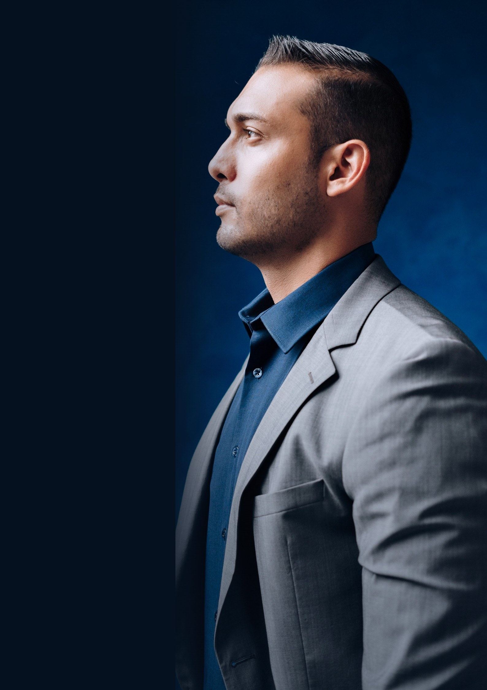
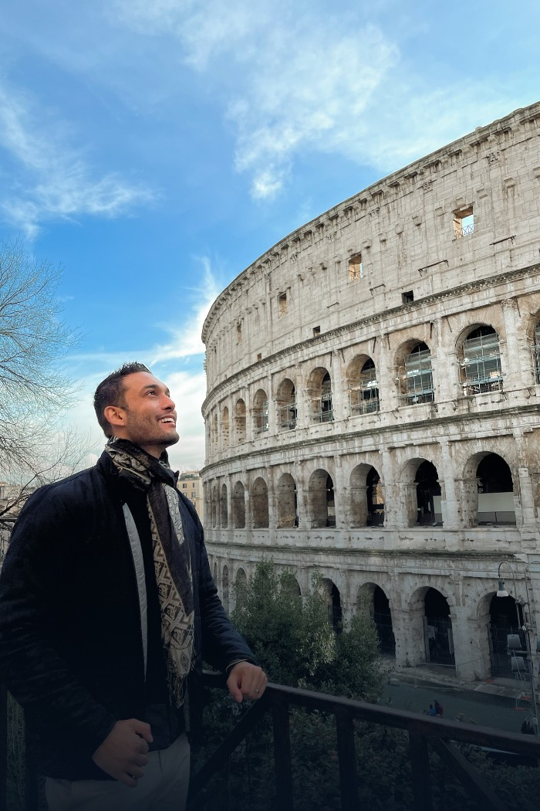
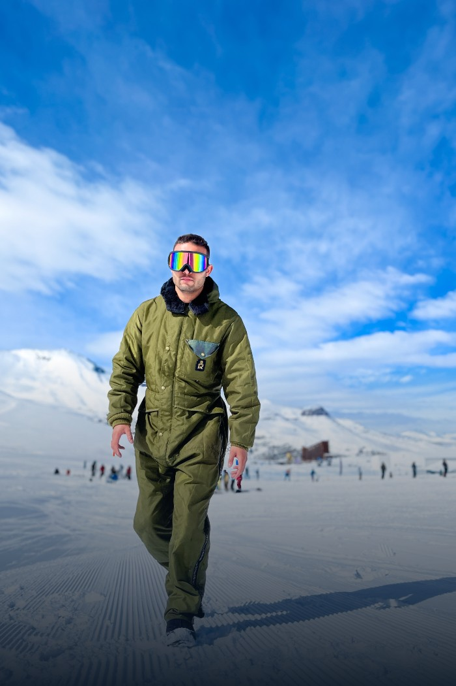
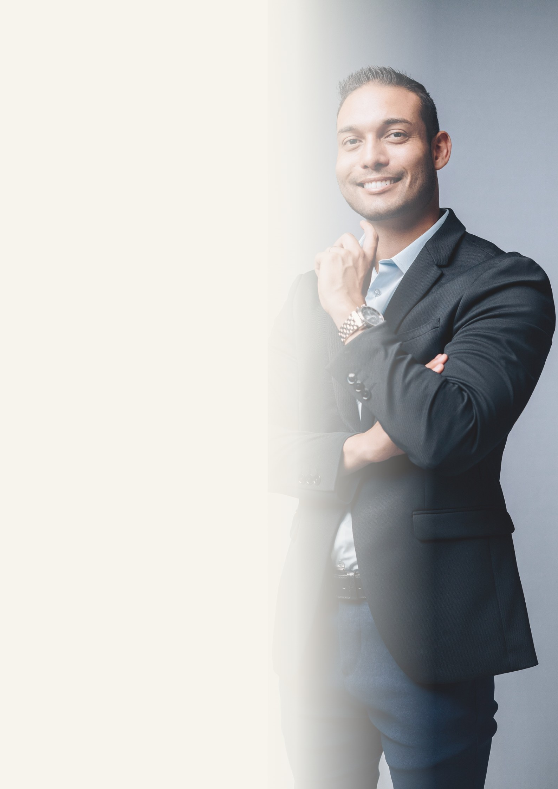

Entender onde você está
Mapeamento da realidade financeira para identificar hábitos, compromissos, riscos e oportunidades.

Proposta de acompanhamento
Organização, estratégia e acompanhamento para transformar sua relação com o dinheiro e construir um futuro com mais possibilidades.
Finanças · Educação · Liberdade
Sobre mim
Educador financeiro · Investidor
Especialista em milhas
Tenho 30 anos e, desde muito cedo, a vida me ensinou a importância da independência financeira.
Comecei a gerar renda aos 14 anos e, aos 15, já investia. Não por modismo, mas por necessidade e visão de futuro.
Com estudo, disciplina e prática diária, construí uma base financeira sólida: reserva de emergência, carteira de investimentos, casa própria e liberdade para viver experiências que antes pareciam distantes.
Hoje, coloco esse conhecimento em prática ajudando outras pessoas a organizarem suas finanças, investirem com consciência e ampliarem suas possibilidades de vida.
Mais do que controlar números, organizar a vida financeira é criar espaço para escolhas conscientes, decisões seguras e sonhos possíveis.

Experiências
LiberdadeO que é este plano
Um acompanhamento individual criado para quem deseja colocar a vida financeira em ordem e construir um caminho possível para o futuro.
Aplicamos princípios de gestão financeira à realidade pessoal para que as decisões deixem de ser improvisadas.
Mapeamento da realidade financeira para identificar hábitos, compromissos, riscos e oportunidades.
Estrutura prática para organizar receitas, despesas, dívidas, contas e decisões do dia a dia.
Plano de ação alinhado às prioridades, aos objetivos e ao momento de vida de cada pessoa.
Acompanhamento para transformar conhecimento em novos hábitos e decisões mais conscientes.
Acompanhamento completo
Conhecimento aplicado, ferramentas e direção para construir uma base financeira mais sólida.
Leitura do cenário atual para compreender rendas, despesas, compromissos, dívidas e prioridades.
Definição de ações práticas, possíveis e ordenadas para avançar a partir da realidade identificada.
Recursos para acompanhar o dinheiro com clareza e tornar a organização parte da rotina.
Conceitos essenciais de finanças e economia traduzidos para decisões do cotidiano e preparação para o futuro.
Construção da reserva de emergência e preparação da base necessária para investir com consciência.
de suporte para acompanhar decisões, ajustar o planejamento e sustentar a evolução financeira ao longo do caminho.
Finanças na prática
O plano também cria clareza para avaliar situações financeiras relevantes, considerando contexto, riscos e possibilidades.
Análise para compreender qual caminho faz mais sentido para o seu momento e seus objetivos.
Entendimento dos custos, compromissos e diferenças antes de assumir uma decisão de longo prazo.
Organização de prioridades e construção de uma estratégia possível para recuperar o controle.
Compreensão dos juros e reorganização do uso do crédito para evitar ciclos de endividamento.
Mais consciência na escolha e utilização de produtos, serviços, limites e soluções financeiras.
Preparação da estrutura necessária para proteger o presente e começar a construir o futuro.
Viagens, projetos, patrimônio ou tranquilidade: transformamos desejos em metas financeiras com direção e próximos passos.
Uma jornada individual
Entendemos sua história, seu momento financeiro, suas dificuldades e seus objetivos.
Mapeamos números, compromissos e prioridades para tornar o cenário visível.
Criamos um plano de ação pessoal com decisões e próximos passos claros.
Você coloca o planejamento em prática com ferramentas e orientação.
Ao longo de 12 meses, ajustamos a rota e fortalecemos sua evolução.
Seu próximo passo
Um plano individual, construído para organizar o presente e preparar suas próximas decisões financeiras.
Pagamento via Pix ou cartão de crédito
Investimento total
R$ 500
Plano Financeiro Pessoal com acompanhamento e suporte por 12 meses.
Ao confirmar a entrada, sua vaga é reservada e iniciamos a etapa de diagnóstico para construir o seu Plano Financeiro Pessoal.

Organização · Estratégia · Futuro
Com clareza, planejamento e acompanhamento, suas finanças podem deixar de ser uma fonte de preocupação e se tornar uma ferramenta para realizar escolhas e ampliar possibilidades.
Eric de Paula
Educador financeiro · Investidor · Especialista em milhas